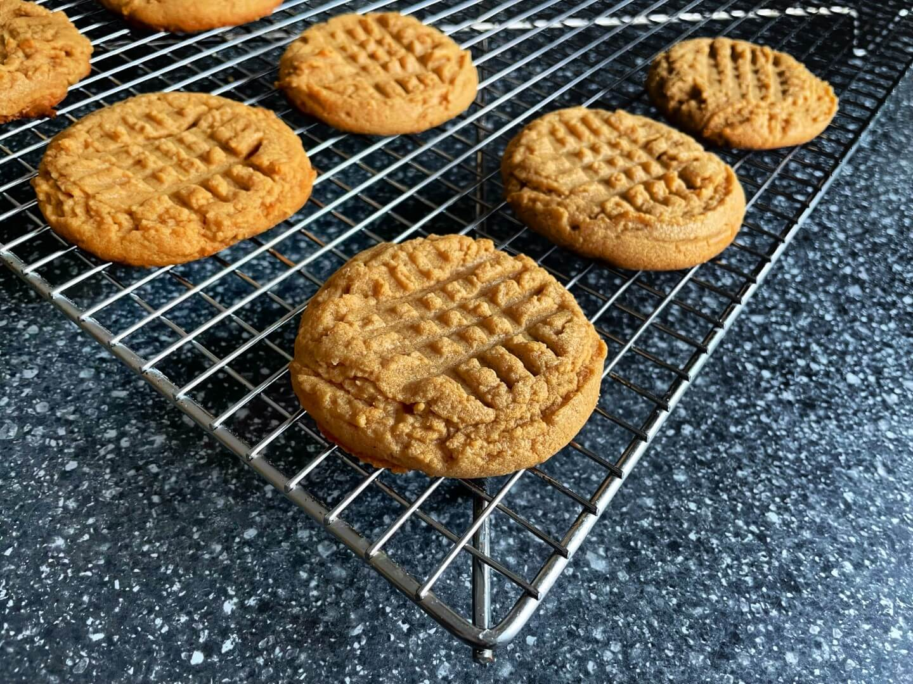

Peanut Butter Cookies
Published —
Edited
Preheat your oven to 177°C (350°F) and line a baking sheet with parchment.
Combine 1 Cup of Peanut Butter, ½ Cup of Sugar, and 1 Large Egg in a bowl. Use a spoon, or ice cream scoop, to place 10-12 dollops of dough onto the baking sheet. Press each dollop with a fork, to create the signature crosshatch pattern, and then bake in the oven for 10 minutes.
Wait at least 20-30 minutes before eating the cookies. They will slowly harden as they cool.
